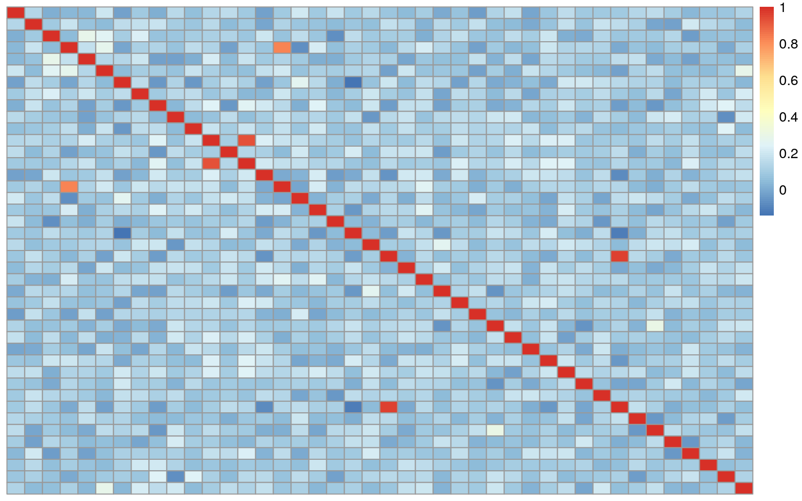
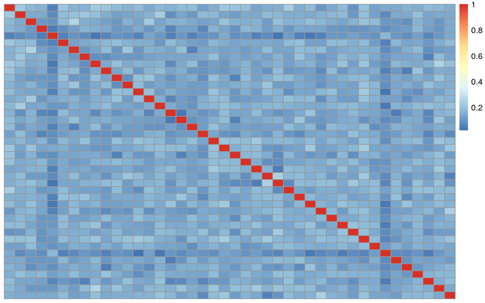

library("pheatmap")
library("tidyr")
library("jaffelab")## Loading required package: rafaliblibrary("here")## here() starts at /__w/SPEAQeasy-example/SPEAQeasy-examplelibrary("VariantAnnotation")## Loading required package: BiocGenerics## Loading required package: parallel##
## Attaching package: 'BiocGenerics'## The following objects are masked from 'package:parallel':
##
## clusterApply, clusterApplyLB, clusterCall, clusterEvalQ,
## clusterExport, clusterMap, parApply, parCapply, parLapply,
## parLapplyLB, parRapply, parSapply, parSapplyLB## The following objects are masked from 'package:stats':
##
## IQR, mad, sd, var, xtabs## The following objects are masked from 'package:base':
##
## anyDuplicated, append, as.data.frame, basename, cbind, colnames,
## dirname, do.call, duplicated, eval, evalq, Filter, Find, get, grep,
## grepl, intersect, is.unsorted, lapply, Map, mapply, match, mget,
## order, paste, pmax, pmax.int, pmin, pmin.int, Position, rank,
## rbind, Reduce, rownames, sapply, setdiff, sort, table, tapply,
## union, unique, unsplit, which.max, which.min## Loading required package: GenomeInfoDb## Loading required package: S4Vectors## Loading required package: stats4##
## Attaching package: 'S4Vectors'## The following object is masked from 'package:tidyr':
##
## expand## The following object is masked from 'package:base':
##
## expand.grid## Loading required package: IRanges## Loading required package: GenomicRanges## Loading required package: SummarizedExperiment## Loading required package: Biobase## Welcome to Bioconductor
##
## Vignettes contain introductory material; view with
## 'browseVignettes()'. To cite Bioconductor, see
## 'citation("Biobase")', and for packages 'citation("pkgname")'.## Loading required package: DelayedArray## Loading required package: Matrix##
## Attaching package: 'Matrix'## The following object is masked from 'package:S4Vectors':
##
## expand## The following objects are masked from 'package:tidyr':
##
## expand, pack, unpack## Loading required package: matrixStats##
## Attaching package: 'matrixStats'## The following objects are masked from 'package:Biobase':
##
## anyMissing, rowMedians##
## Attaching package: 'DelayedArray'## The following objects are masked from 'package:matrixStats':
##
## colMaxs, colMins, colRanges, rowMaxs, rowMins, rowRanges## The following objects are masked from 'package:base':
##
## aperm, apply, rowsum## Loading required package: Rsamtools## Loading required package: Biostrings## Loading required package: XVector##
## Attaching package: 'Biostrings'## The following object is masked from 'package:base':
##
## strsplit##
## Attaching package: 'VariantAnnotation'## The following object is masked from 'package:base':
##
## tabulatelibrary("SummarizedExperiment")In order to resolve the swaps to our best ability we need four data sets. Here we have load snpGeno_example which is from our topmed imputed genotype data, a phenotype data sheet (pd_example), a vcf file of the relevant speaqeasy output (Speaqeasy), and our current genotype sample sheet (brain_sentrix). This file is wrote in the directory listed below.
load(here("sample_selection","snpsGeno_example.RData"), verbose = TRUE)## Loading objects:
## snpsGeno_exampleload(here("sample_selection","pd_example.Rdata"), verbose = TRUE)## Loading objects:
## pd_exampleSpeaqeasy<-readVcf(here("pipeline_outputs","merged_variants","mergedVariants.vcf.gz"),genome="hg38")
brain_sentrix<- read.csv(here("brain_sentrix_speaqeasy.csv"))We can see that the genotype is represented in the form of 0s,1s, and 2s. The rare 2s are a result of multiallelic snps and we will drop those. 0 represent the reference allele with ones representing the alternate. We can see the distribution below.
Geno_speaqeasy<-geno(Speaqeasy)$GT
table(Geno_speaqeasy)## Geno_speaqeasy
## ./. 0/1 0/2 1/1 2/2
## 14096 7803 4 6018 9Given this we convert we convert the Genotype data from Speaqeasy to numeric data. The “./.” were values that could not accurately be determined and are replaced with NA.
colnames_speaqeasy<- as.data.frame(colnames(Geno_speaqeasy))
colnames(colnames_speaqeasy)<-c("a")
samples<-separate(colnames_speaqeasy,a,into = c("a","b","c"),sep = "_")## Warning: Expected 3 pieces. Additional pieces discarded in 42 rows [1, 2, 3, 4,
## 5, 6, 7, 8, 9, 10, 11, 12, 13, 14, 15, 16, 17, 18, 19, 20, ...].samples<-paste0(samples$a,"_",samples$b)
samples<-as.data.frame(samples)
colnames(Geno_speaqeasy)<-samples$samples
Geno_speaqeasy[Geno_speaqeasy == "./."] = NA
Geno_speaqeasy[Geno_speaqeasy == "0/0"] = 0
Geno_speaqeasy[Geno_speaqeasy == "0/1"] = 1
Geno_speaqeasy[Geno_speaqeasy == "1/1"] = 2
class(Geno_speaqeasy) = "numeric"## Warning in class(Geno_speaqeasy) = "numeric": NAs introduced by coercioncorner(Geno_speaqeasy)## R14030_H7K5NBBXX R14184_H7K5NBBXX R13904_H7K5NBBXX
## chr1:4712657_G/A 2 1 2
## chr1:7853370_G/A NA NA NA
## chr1:9263851_G/A NA NA 1
## chr1:13475857_T/C NA NA NA
## chr1:15289643_G/A NA NA NA
## chr1:15341780_G/A NA NA NA
## R14296_H7JLCBBXX R14247_HF3JYBBXX R15093_HFY2MBBXX
## chr1:4712657_G/A 1 1 2
## chr1:7853370_G/A NA NA NA
## chr1:9263851_G/A 1 1 NA
## chr1:13475857_T/C NA NA NA
## chr1:15289643_G/A NA NA NA
## chr1:15341780_G/A NA NA 1We then make a correlation matrix to find the possible mismatches between samples.
speaqeasy_Cor = cor(Geno_speaqeasy,use="pairwise.comp")
corner(speaqeasy_Cor)## R14030_H7K5NBBXX R14184_H7K5NBBXX R13904_H7K5NBBXX
## R14030_H7K5NBBXX 1.00000000 0.13507812 0.01657484
## R14184_H7K5NBBXX 0.13507812 1.00000000 0.09347004
## R13904_H7K5NBBXX 0.01657484 0.09347004 1.00000000
## R14296_H7JLCBBXX 0.03106472 0.18748043 0.04958385
## R14247_HF3JYBBXX 0.03384912 0.07080491 0.28798955
## R15093_HFY2MBBXX 0.18938568 0.04720309 0.25477682
## R14296_H7JLCBBXX R14247_HF3JYBBXX R15093_HFY2MBBXX
## R14030_H7K5NBBXX 0.03106472 0.03384912 0.18938568
## R14184_H7K5NBBXX 0.18748043 0.07080491 0.04720309
## R13904_H7K5NBBXX 0.04958385 0.28798955 0.25477682
## R14296_H7JLCBBXX 1.00000000 0.16653808 0.27251010
## R14247_HF3JYBBXX 0.16653808 1.00000000 0.14097339
## R15093_HFY2MBBXX 0.27251010 0.14097339 1.00000000Here in the heatmap below we can see that several points do not correlate with themselves in a semetrical matrix. This could be mismatches, but it also could be a result of a brain being sequenced twice. We will dig more into this later on. 
We repeat the process for the genotype data from topmed. First creating our numeric data for the genotypes.
## Geno_example
## 0|0 0|1 1|0 1|1
## 9656 6956 7185 7535## 4463344375_R01C01 4463344375_R01C02 4572348848_R01C02
## 4463344375_R01C01 1.00000000 0.21736687 0.17615291
## 4463344375_R01C02 0.21736687 1.00000000 0.13803954
## 4572348848_R01C02 0.17615291 0.13803954 1.00000000
## 4572348855_R01C02 0.16590842 0.14670605 0.10600440
## 5535549043_R01C01 0.05367081 0.07697879 0.09356496
## 5535506145_R01C01 0.21189898 0.18114194 0.17829111
## 4572348855_R01C02 5535549043_R01C01 5535506145_R01C01
## 4463344375_R01C01 0.16590842 0.05367081 0.21189898
## 4463344375_R01C02 0.14670605 0.07697879 0.18114194
## 4572348848_R01C02 0.10600440 0.09356496 0.17829111
## 4572348855_R01C02 1.00000000 0.04874508 0.08186958
## 5535549043_R01C01 0.04874508 1.00000000 0.05331113
## 5535506145_R01C01 0.08186958 0.05331113 1.00000000In this case the data only appears to have samples that match themselves. However there is the potential for a second kind of error where a brain has two samples, however the do not match each other. 
In order to dig into this further we will collapse the correlation matrices into a data table shown below
corLong = data.frame(cor = signif(as.numeric(correlation_genotype),3))
corLong$rowSample = rep(colnames(snpsGeno_example), times = ncol(snpsGeno_example))
corLong$colSample = rep(colnames(snpsGeno_example), each = ncol(snpsGeno_example))
corLong = corLong[!is.na(corLong$cor),]
head(corLong)## cor rowSample colSample
## 1 1.0000 4463344375_R01C01 4463344375_R01C01
## 2 0.2170 4463344375_R01C02 4463344375_R01C01
## 3 0.1760 4572348848_R01C02 4463344375_R01C01
## 4 0.1660 4572348855_R01C02 4463344375_R01C01
## 5 0.0537 5535549043_R01C01 4463344375_R01C01
## 6 0.2120 5535506145_R01C01 4463344375_R01C01corLong2 = data.frame(cor = signif(as.numeric(speaqeasy_Cor),3))
corLong2$rowSample = rep(colnames(Geno_speaqeasy), times = ncol(Geno_speaqeasy))
corLong2$colSample = rep(colnames(Geno_speaqeasy), each = ncol(Geno_speaqeasy))
corLong2 = corLong2[!is.na(corLong2$cor),]
head(corLong2)## cor rowSample colSample
## 1 1.0000 R14030_H7K5NBBXX R14030_H7K5NBBXX
## 2 0.1350 R14184_H7K5NBBXX R14030_H7K5NBBXX
## 3 0.0166 R13904_H7K5NBBXX R14030_H7K5NBBXX
## 4 0.0311 R14296_H7JLCBBXX R14030_H7K5NBBXX
## 5 0.0338 R14247_HF3JYBBXX R14030_H7K5NBBXX
## 6 0.1890 R15093_HFY2MBBXX R14030_H7K5NBBXXWe can check these tables for columns where different brains are strongly correlated and where the same brain fails to match itself. Below is the output of those analysis for the topmed genotypes.
## cor rowSample colSample rowBrain colBrain
## 180 0.0825 6017049081_R01C02 5535549043_R01C01 Br1652 Br1652
## 196 0.0501 201398400130_R04C01 5535549043_R01C01 Br1652 Br1652
## 467 0.0825 5535549043_R01C01 6017049081_R01C02 Br1652 Br1652
## 490 0.1440 201398400130_R04C01 6017049081_R01C02 Br1652 Br1652
## 1139 0.0501 5535549043_R01C01 201398400130_R04C01 Br1652 Br1652
## 1146 0.1440 6017049081_R01C02 201398400130_R04C01 Br1652 Br1652
## 1212 0.0379 9373406026_R02C01 201398400130_R06C01 Br2275 Br2275
## 1499 0.0379 201398400130_R06C01 9373406026_R02C01 Br2275 Br2275
## rowBatch colBatch
## 180 1M 1M
## 196 2-5-8-v1-3 1M
## 467 1M 1M
## 490 2-5-8-v1-3 1M
## 1139 1M 2-5-8-v1-3
## 1146 1M 2-5-8-v1-3
## 1212 5M 2-5-8-v1-3
## 1499 2-5-8-v1-3 5M## [1] cor rowSample colSample rowBrain colBrain rowBatch colBatch
## <0 rows> (or 0-length row.names)And we do this again for the speaqeasy data.
## [1] cor rowSample colSample rowBrain colBrain
## <0 rows> (or 0-length row.names)## [1] cor rowSample colSample rowBrain colBrain
## <0 rows> (or 0-length row.names)We will next compare the correlation between the speaqeasy samples and the topmed samples. In order to do this we need to subset the genotypes for only SNPs that are common between the two. We can see that we have 656 snps common between the 42 samples.
## [1] 662 42## [1] 662 42As we did before we create a correlation matrix this time between the two data sets.
Check to correlation between Speaqeasy and Genotype for mismatches and swaps.
## cor rowSample colSample colBrain rowBrain
## 165 0.00962 9373408026_R01C01 R14296_H7JLCBBXX Br2473 Br2473
## 425 0.11600 5535549043_R01C01 R14129_HCTYLBBXX Br1652 Br1652
## 432 0.11800 6017049081_R01C02 R14129_HCTYLBBXX Br1652 Br1652
## 498 -0.04270 9373406026_R02C01 R14222_H7JHNBBXX Br2275 Br2275
## 582 -0.03790 9373406026_R02C01 R13997_H7JHNBBXX Br2275 Br2275
## 669 0.08540 9373408026_R01C01 R14077_HCTYLBBXX Br2473 Br2473
## 917 0.04020 9373406026_R01C01 R14290_H7L3FBBXX Br2260 Br2260
## 1463 0.05050 9373406026_R01C01 R14071_HF3JYBBXX Br2260 Br2260
## 1697 0.76500 3998646040_R06C01 R14017_HF5JNBBXX Br5190 Br5190## cor rowSample colSample colBrain rowBrain
## 161 0.865 9373406026_R01C01 R14296_H7JLCBBXX Br2473 Br2260
## 665 0.815 9373406026_R01C01 R14077_HCTYLBBXX Br2473 Br2260
## 921 0.866 9373408026_R01C01 R14290_H7L3FBBXX Br2260 Br2473
## 1467 0.915 9373408026_R01C01 R14071_HF3JYBBXX Br2260 Br2473We can see from this from this analysis there are a few swaps present between RNA and DNA samples here. We can categorize them as simple and complex sample swaps. Because the two Br2275 do not match each other and also match nothing else we will be forced to consider this a complex swap and drop the sample. In the case of Br2473 it is a simple swap with Br2260 in both cases. This can be ammended by swapping with in the phenotype data sheet manually. Now we have our accurate data outputs and will need to fix our ranged summarized experiment object for our Speaqeasy data.
load(here('pipeline_outputs', 'count_objects', 'rse_gene_Jlab_experiment_n42.Rdata'))
## drop sample from rse with speaqeasy data
ids<-pd_example$SAMPLE_ID[pd_example$BrNum =="Br2275"]
rse_gene<-rse_gene[,!rse_gene$SAMPLE_ID ==ids[1]]
rse_gene<- rse_gene[,!rse_gene$SAMPLE_ID ==ids[2]]
# resolve swaps and drops in pd_example
pd_example<-pd_example[!pd_example$SAMPLE_ID ==ids[1],]
pd_example<-pd_example[!pd_example$SAMPLE_ID ==ids[2],]
ids2<-pd_example$SAMPLE_ID[pd_example$BrNum =="Br2260"]
ids3<-pd_example$SAMPLE_ID[pd_example$BrNum =="Br2473"]
pd_example$SAMPLE_ID[pd_example$Sample_ID == ids2]<- "Br2473"
pd_example$SAMPLE_ID[pd_example$Sample_ID == ids3]<- "Br2260"
# reorder phenotype data by the sample order present in the 'rse_gene' object
pd_example = pd_example[match(rse_gene$SAMPLE_ID, pd_example$SAMPLE_ID),]
# add important colData to 'rse_gene'
rse_gene$BrainRegion = pd_example$BrainRegion
rse_gene$Race = pd_example$Race
rse_gene$PrimaryDx = pd_example$PrimaryDx
rse_gene$Sex = pd_example$Sex
rse_gene$AgeDeath = pd_example$AgeDeath
#add correct BrNum to colData for rse_gene
colData(rse_gene)$BrNum <- pd_example$BrNum
save(rse_gene, file = "rse_speaqeasy.RData")